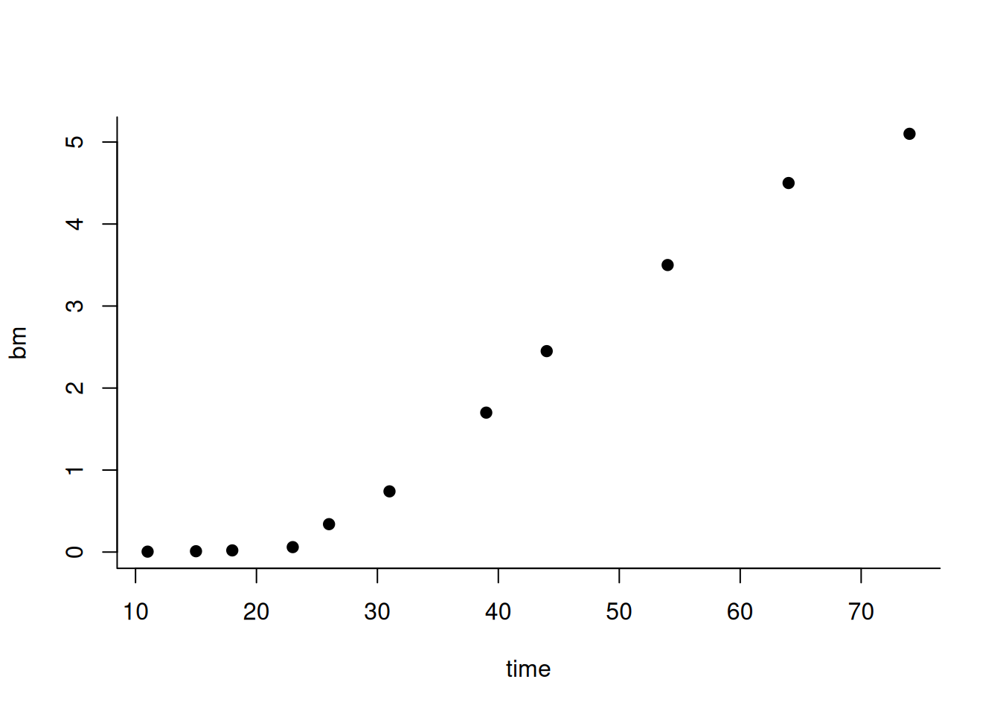
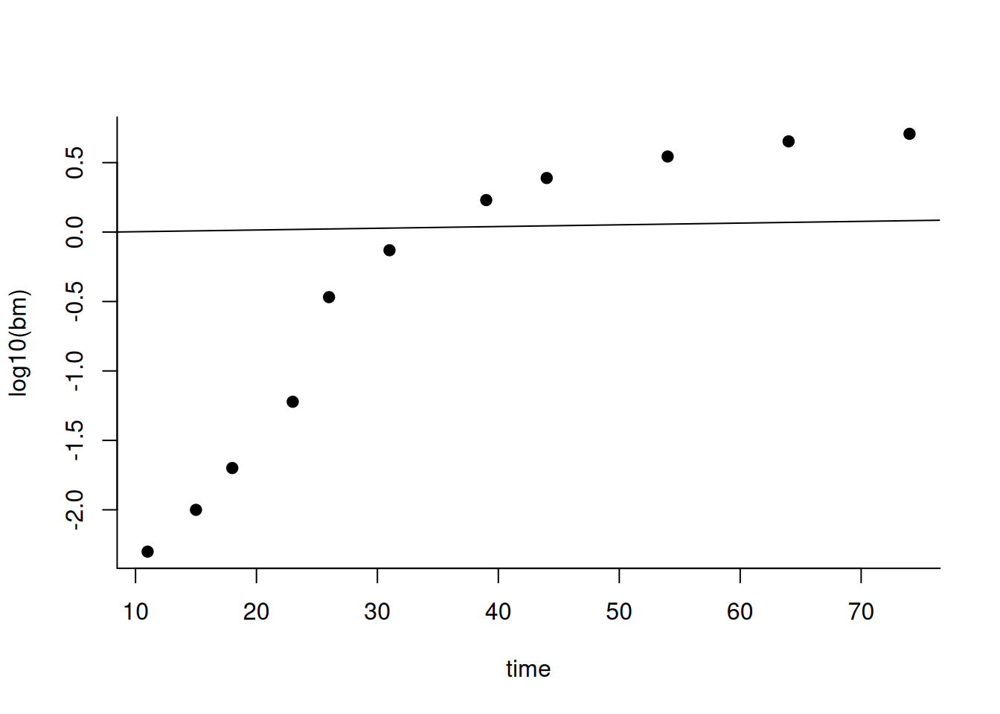
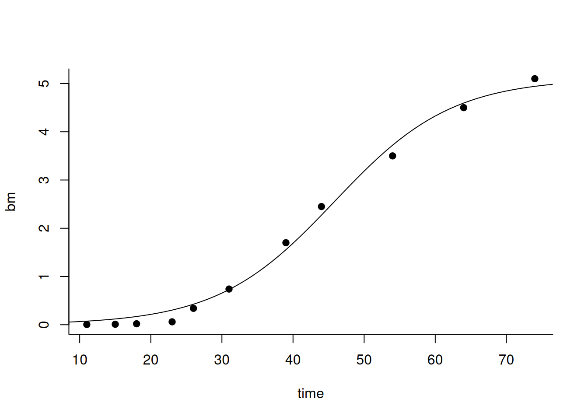
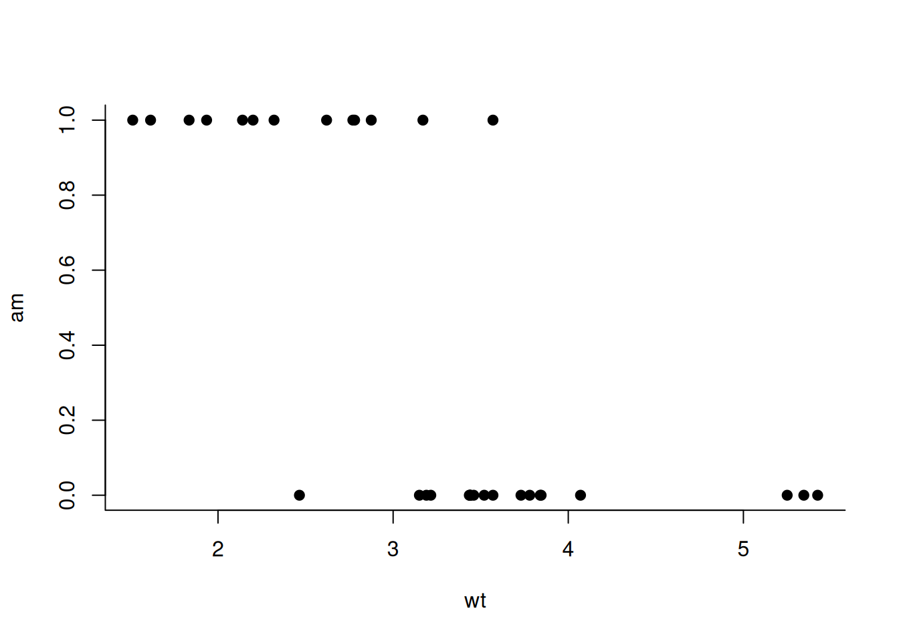
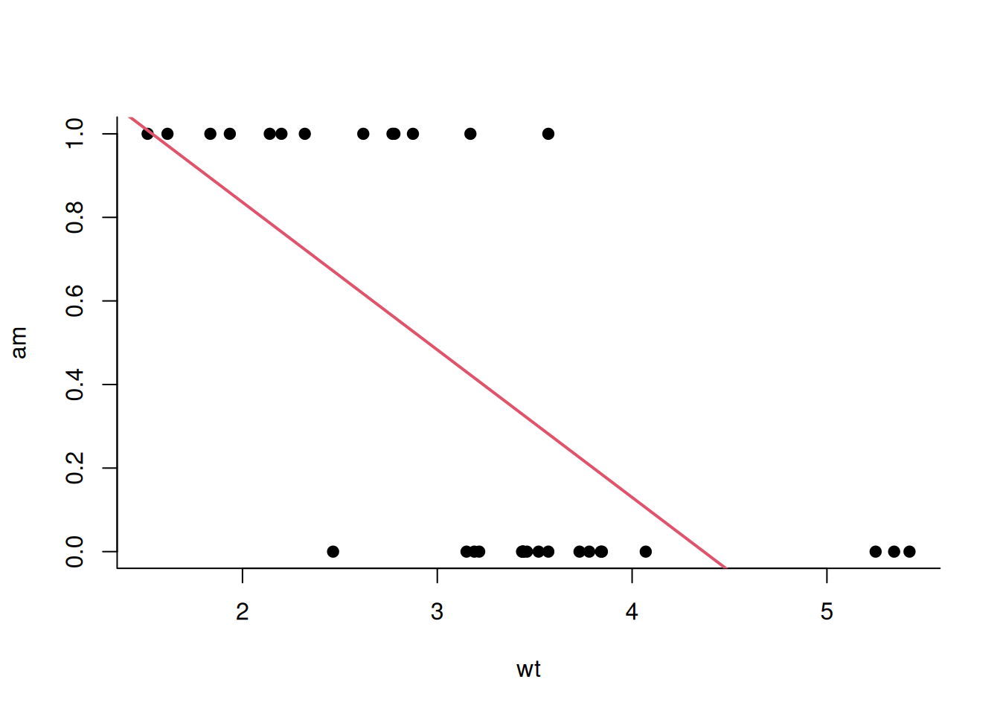
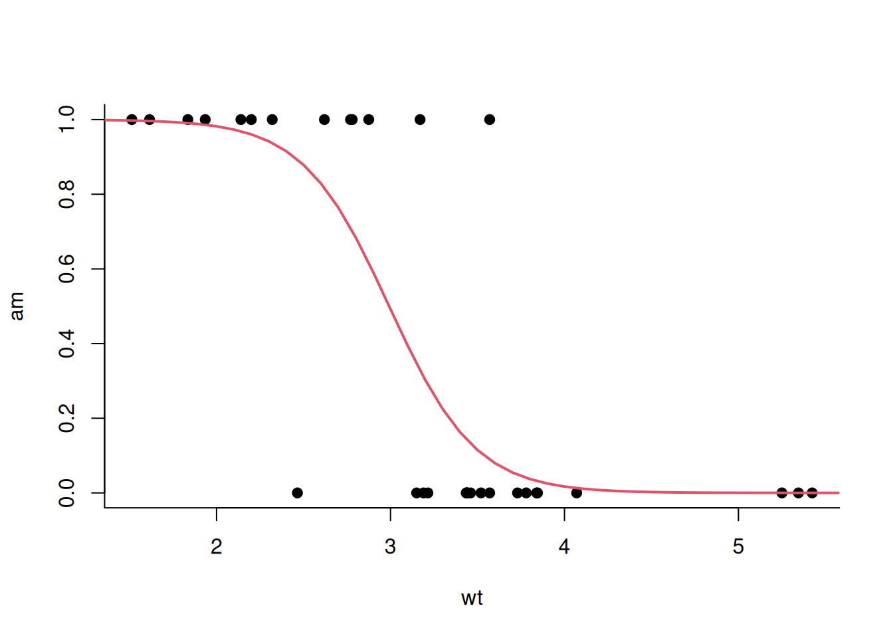
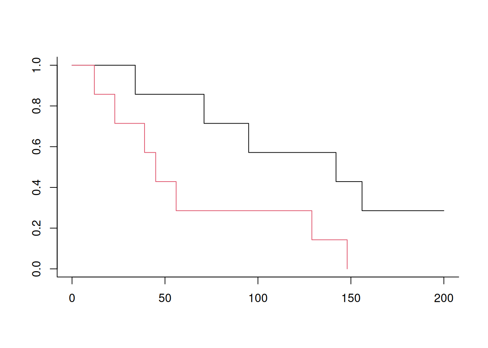

5 Non-linear models
5.1 Portfolio contributions
5.1.1 The Box-Cox transformation
(This was a student contribution for item 3. These contributions are included in the transcript, but they will not be tested in the exams.)
A student showed us a set of slides (https://www.stat.uchicago.edu/~yibi/teaching/stat224/L13.pdf) he had come across online that discussed how we can use data transformations – like the logarithmic transformation and the Box-Cox transformation – to make data more amenable for linear regression. These transformations help reduce skewness and stabilize variance, which helps with many regression models that assume that the variance of the “errors” (differences between the model and the data) is the same across all values of the predictors (the so-called homoschedasticity assumption). Such transformations are useful because they allow researchers to still apply simple linear models to complex data. However, the use of transformations can make the results a bit harder to interpret (e.g. log transformation) or even near-impossible to interpret (e.g. Box-Cox transformation).
5.2 Introduction
5.2.1 Recap
During the last two weeks, we have discussed the following concepts:
- We have introduced the concept of loss functions and used them to fit models;
- We have discussed the squared loss in particular, and showed that minimizing the squared loss of a predictor leads to a model of (conditional) expectation;
- We defined the linear regression model as a linear model of conditional expectation;
- And we defined the linear regression model as a conditional probability distribution.
At this point, we are able to fit linear regression models to datasets, and we also saw that those linear models are quite a bit more powerful that one may think because we can transform the input variables by applying arbitrary functions to them – the result is then still a linear model as it remains linear in the model parameters.
In particular, this means that we can use linear models together with log transformation of the input variables, more sophisticated transformation (such as the Box-Cox transformation mentioned at the beginning of this class), and interaction terms which are products of variables. Intuitively, this is possible because each of these operations can be viewed as performing some pre-processing operation on the input variables, and then using a standard linear regression on those transformed variables – it’s essentially a pre-processing step.
5.2.2 The motivation for non-linear models
When and why would we need non-linear models? Since there are compelling reasons to prefer linear models – simplicity, interpretability, availability of closed-form solutions that don’t require numerical optimization - we may be tempted to use them as much as possible.
In the context of inference, a common reason to use non-linear models is that the research question itself implies a non-linear relationship. This is very common in scientific applications, when hypotheses are generated from mathematical equations that describe the system under study (e.g., in physics, biology, econometrics).
Another common reason is that probability models can often lead to non-linear optimization problems that need to be solved. Today we’ll first see that, perhaps surprisingly, this is not the case for the Gaussian linear regression model – but then we’ll look at two other examples where we do arrive at non-linear problems.
Specifically, we’ll look at:
- A model of population growth in biology;
- The logistic regression model;
- The Cox proportional hazards model for time-to-event data.
5.3 A model of population growth in biology
We’re now going to look at an example of a non-linear model that is motivated by the process we’re trying to model.
Many biological organisms grow by “multiplication”. Let’s consider a growing organism or group of organisms. The time series \(Y(t)\) can be described by a differential equation:
\[ Y(0) = \alpha \]
\[ \frac{d}{d t} Y(t) = \beta \, Y(t) \]
Differential equations are used in physics, biology, chemistry and other fields to describe processes by which things change over time. They are called differential equations because they contain both a function and its derivative (or multiple derivatives).
The \(Y(t)\) could represent something like a bacteria colony or a population of animals, for example. Such biological populations often grow by reproduction, meaning they multiply themselves. The above equation simply states that the rate of change in the number \(Y\) is equal to the number \(Y\) itself times some growth rate \(\beta\).
For example, suppose we have a population of ten rabbits, and we want to know how many rabbits there will be in the near future. Suppose \(\beta=2\), then the population of rabbits would grow at rate 20.
In easy cases such as this, differential equations can be solved, which means we can find an analytical function for \(Y(t)\) that satisfies the requirements defined by the differential equation. This is no longer feasible for more complex equations, which may require numerical approaches to be solved. For our purpose in this class, we’re not really concerned with this aspect, as long as we have some way to compute \(Y(t)\) given the parameters of the equation.
The analytical solution of the growth equation is:
\[ Y(t) = \alpha \exp( \beta \, t ) \]
We can recognize this equation as it describes exponential growth.
So, to revisit our example, if there are \(\alpha=10\) rabbits at time \(t=0\) and \(\beta=2\), then we expect almost 74 rabbits at time \(t=1\).
This would be an example of a non-linear model – \(Y(t)\) is a nonlinear function of the parameter \(\beta\), though not of \(\alpha\) – that directly arises from a scientific theory of population growth. In a typical inference setting, these equations observe parameters like the growth rate that are not directly observable (it may e.g. not be feasible to follow each event where a rabbit gives birth) and must be inferred from data.
In inference, unlike in “simpler” prediction problems, the goal is to understand how the system works (e.g., how many offspring per unit time), not just to forecast numbers. Since the model follows from a scientific theory, we can’t just swap it out for a different or more convenient one like in some machine learning settings, where our customer may not really care whether we use e.g. an LSTM or a transformer model for our prediction task. Thus, in research contexts, non-linear models are often unavoidable.
5.3.1 Algae growth
Now let’s look at this example data of a growing population of Algae in the Adriatic sea, and try to fit our growth model to it.
# time in days
time <- c( 11, 15, 18, 23, 26, 31, 39, 44, 54, 64, 74 )
# biomass in mm^2
bm <- c( .005, .01, .02, .06, 0.34,
0.74, 1.7, 2.45, 3.5, 4.5, 5.1 )
plot( time, bm );
Remember when we weren’t able to swim in the Waal last summer because of the spread of blue algae? That’s the kind of measure we’re looking at – someone’s taking water samples and measuring the amount of Algae in there. Once it gets warm enough, the algae will start to grow exponentially, since they’re microorganisms that grow by reproduction. The unit of population size is \(\text{mm}^2\) since the algae cover the surface of the water.
Let’s try to fit the exponential growth model in the usual way, where we just define a square loss function to account for differences between the model curve and the actual data and then proceed as usual:
time <- c( 11, 15, 18, 23, 26, 31, 39, 44, 54, 64, 74 )
bm <- c( .005, .01, .02, .06, 0.34,
0.74, 1.7, 2.45, 3.5, 4.5, 5.1 )
model <- function( x, th ) th[1]*exp( th[2]*x )
loss <- function( x, y, th ) mean( (y-model(x,th))^2 )
loss_algae <- function( th ) loss( time, bm, th )
fit <- nlm( loss_algae, c(1, .01 ) )## Warning in nlm(loss_algae, c(1, 0.01)): Inf replaced by maximum positive value
## Warning in nlm(loss_algae, c(1, 0.01)): Inf replaced by maximum positive valueHere we can now see the advantage of our flexible model fitting approach: it can be very easily adapted to custom models, as long as I can write a function model that takes parameter and data and outputs a prediction.
There are a few things to observe now. The first is that the fit isn’t great, which is important and will be addressed later. But first, I want to make an important technical point regarding fits of non-linear models.
5.3.2 Initialization of the numerical optimizer
Let’s take a second to note that in earlier examples, I hadn’t needed to carefully choose initial values for my numerical optimizer nlm, and normally just used the number 1 as an initial guess. Now, I apparently did use other numbers. This was actually necessary; if you change the initial values to 1 in the code example below, you’ll see that the model does not fit anymore.
Why could this be the case ?
The optimizer uses a local, it finds a local minimum so if your initial guess is bad then you’ll find a bad minimum
It’s indeed possible for that to happen with functions that have multiple local minima. But here that’s probably not what’s going on. Notice how there is an \(\exp\) operation in the function I’m fitting. If I were to put too high values into this function, it would lead to huge and imprecise output numbers, making numerical optimization really challenging. Conversely, if we are in a region where the function values are tiny, the estimated numerical gradient might “vanish”.
This difficulty of choosing initial values is one good reason to avoid non-linear models if we can, but in this case unfortunately we need to use the model as-is. In this example, I just used a bit of trial-and-error to get initial values that work, but in other cases, smarter strategies might be needed – e.g., we could try to first somehow approximate what we’re doing by a linear model, fit that, and then plug-in the best fit of that approximation into our non-linear model.
5.3.3 Fitting a linear-log model
Another trick we still have up our sleeve is variable transformation, which was also alluded to in the beginning. Now instead of transforming the predictor variable \(X\), we’ll instead transform the entire equation
\[ Y = \alpha \exp(\beta\,X) \]
and arrive at this:
\[ \log(Y) = \log(\alpha) + \beta\,X \]
This is just a linear equation, so it turns out we can simply do linear regression after all! What we’ve built here is sometimes called a linear-log model (linear in its predictors, logarithmic in its outcome) whereas if we log-transform \(X\) then that’s sometimes called a log-linear model (logarithmic predictor, linear outcome) although I find that terminology slightly confusing, since the “linear” in linear model stands for “linear in its parameters” and not for “linear in its predictors” as we’ve observed already earlier.
Let’s try to fit our model:
time <- c( 11, 15, 18, 23, 26, 31, 39, 44, 54, 64, 74 )
bm <- c( .005, .01, .02, .06, 0.34,
0.74, 1.7, 2.45, 3.5, 4.5, 5.1 )
model <- function( x, th ) log10(th[1]) + th[2]*x
loss <- function( x, y, th ) mean( (y-model(x,th))^2 )
loss_algae <- function( th ) loss( time, log10(bm), th )
fit <- nlm( loss_algae, c(1,1) )## Warning in model(x, th): NaNs produced## Warning in nlm(loss_algae, c(1, 1)): NA/NaN replaced by maximum positive value## Warning in model(x, th): NaNs produced## Warning in nlm(loss_algae, c(1, 1)): NA/NaN replaced by maximum positive value
## [1] 0.977413822 0.001243317For starters, we can see that this is indeed easier: I just used my default initial values of 1,1 and the optimizer converged fine.
But are we happy about how this looks like? The earlier fit already wasn’t great, but I would say this one is even worse! It even appears to suggest that the algae are not growing much at all (look at the coefficient \(\beta\)).
It turns out that, by changing the scale of the response variable, we have actually implicitly changed the whole model, which now pays much more attention to differences between the small numbers at the beginning (left side of the plot) than to the large numbers at the end (right side of the plot).
So, while convenient, the log-transformation of the output doesn’t look like a great thing to do here.
5.3.4 Model falsification revisited
How could we improve our model? We’ve talked previously about using different loss functions to deal with properties of the errors – e.g. if a linear regression looks mostly fine but there are some outliers, using a Huber loss might be a good idea to ensure those outliers don’t unduly influence the fit. But here, it looks like the problem is not in the errors, but in the model itself, which doesn’t seem to be able to describe the data well.
In Lecture 1, we talked about the idea of falsification of theories in science as championed by Karl Popper. We could see our current result as an instance of that: we started out with a theory that seemed reasonable, but even after optimizing our theoretical curve to fit the data as good as possible, our fit is still quite bad. This may mean that we have falsified our model, and it’s time to go back to the drawing board and try to find something better.
But did we really falsify our model? We actually fitted a combination of model and loss function. Wouldn’t we have had to test all possible loss functions to make sure it’s actually our model that’s at fault?
Excellent point! What you’re referring to is called an auxiliary hypothesis in philosophy of science (see, for instance https://patrick.maher1.net/318/lectures/popper3.pdf). We started with our growth model – our main hypothesis – but to actually fit it to data we needed to add something else to it: the loss function – our auxiliary hypothesis. So, strictly speaking, we falsified the combination of main and auxiliary hypothesis, and not the main hypothesis alone.
Indeed, this is a common critique of Popper’s falsificationism: in practice, we can almost never falsify hypotheses without relying on auxiliaries in some shape or form. A well-known example are the distributional assumptions that some statistical tests make, such as the equality of variance in the t-test.
In our case, it’s obviously not feasible to try all possible loss functions since there is an infinite number. So could it be that the model would suddenly fit the data very well when using a different loss function? In fact, I would argue that this would not be possible at all. The problem is that the “sigmoid” shape of the data, where we have a flat region initially, then a region of rapid growth, and then a levelling off, can’t really be obtained with an exponential function at all: for all exponential functions, the rate of growth is constant over time, and cannot slow down. This is a key feature of the data that our model, independent of the loss function, will struggle to explain.
5.3.5 The logistic growth model
So what we’re going to do now is that we’ll try to come up with a different theory. A key issue with exponential growth models is that they assume there are unlimited resources. For reproduction, a biological organism requires resources like food, air, and water, which are not infinite. In our example where we release a population of rabbits on a small island, their population may grow rapidly for a while, but eventually there’s not going to be enough food left for all these rabbits and some will start dying of starvation.
A more realistic version of the exponential growth model takes resource constraints into account by adding a carrying capacity \(C\) to the system:
\[ Y(0) = \alpha \]
\[ \frac{d}{d t} Y(t) = \beta \, Y(t) \underbrace{\left( 1 - \frac{Y(t)}{C} \right)}_{\text{growth multiplier}} \]
The additional “growth multiplier” gradually slows down the growth as \(Y(t)\) approaches \(C\):
- Initially, when \(Y(t) \ll C\), the growth multiplier is close to 1 and has little effect.
- When \(Y(t) = C/2\) (the system is at half its capacity), growth is slowed down by half.
- When \(Y(t) = C\) (the system is at capacity), there is no further growth.
- And when \(Y(t) > C\) (the system is over capacity), the growth rate becomes negative, so organisms die faster than they get replaced.
This logistic growth model is a quite standard model because the solution we obtain by solving this differential equation system is in fact a logistic function:
\[ Y(t) = \frac{\alpha C}{\alpha+\exp(-\beta\, t)( C - \alpha ) } \]
This function looks slightly more complicated than our simple exponential model, but not much, and we can fit it the same way as always:
time <- c( 11, 15, 18, 23, 26, 31, 39, 44, 54, 64, 74 )
bm <- c( .005, .01, .02, .06, 0.34,
0.74, 1.7, 2.45, 3.5, 4.5, 5.1 )
model <- function( x, th ){
th[1]*th[3]/(th[1]+exp( -th[2]*x )*(th[3]-th[1]))
}
loss <- function( x, y, th ) mean( (y-model(x,th))^2 )
loss_algae <- function( th ) loss( time, bm, th )
fit <- nlm( loss_algae, c(.1, .1, 5 ) )
plot( time, bm )
xx <- seq(0,100)
lines( xx, model(xx,fit$estimate) )
## [1] 0.01988528 0.12099275 5.10525449That hasn’t changed much compared to before, although our optimization is now three-dimensional. Again I’ve tweaked my numbers here a bit to make the optimizer work and avoid blow-ups related to the exponential.
Couldn’t we just do grid search to find good starting values?
Maybe, but it’s often not practical, especially in higher dimensions. We’d also at least have to know which range of parameters to search in in the first place. As the number of parameters increases, the amount of time needed for the grid search grows exponentially. Often, a better approach is to use your understanding of the model to “eyeball” reasonable parameter values. For example, I set the initial value for \(C\) to \(5\), since that’s a number the algae seem to be levelling off at.
Overall, our fit looks quite good now, certainly much better than before! We’ll talk later in more formal terms about how we can compare such fits quantitatively.
Now we’ve done a whole “cycle” of Popper’s approach! We started with a model that was perhaps not too unreasonable, but didn’t explain the data well, so we rejected it. Then we tried a more realistic version of the model, and now we’re happy with the results, so we stop here for now and report our interpretation and conclusions.
The easiest number to interpret is \(C\): it’s just the maximum amount of algae that the system can support. In this example, that number – the carrying capacity of the system – is estimated to be 5.1. According to the model, the population won’t grow any further once it has reached that size, perhaps because there aren’t enough nutrients left.
The parameter \(\alpha\) is also not too hard to interpret: it’s the initial amount of algae that the system starts off at.
Now we come to perhaps the most interesting parameter \(\beta\). This is still a growth rate, but note that the growth rate now changes as time progresses:
- Initially (say, during the first 30 days), there is essentially exponential growth at rate 0.12, so the population grows by 12% per day.
- Later on (around day 40-50, when the system reaches about half its capacity), the growth rate reduces to around 6% per day.
So the growth rate doesn’t technically depend on the time but actually on the current amount but because it’s linked to time?
Yes exactly.
And after about 70 days, the system is near its maximum capacity, and won’t grow much further.
A simple summary interpretation would therefore be:
- The initial amount of algae was near 0.01.
- As long as there are plenty of nutrients available, the algae grow by about 12%.
- After reaching a size of 5mm² in the sample, the algae can’t grow any further due to nutrient limits.
(Break)
After the break, we discussed a few organization questions students had about portfolio items. The key conclusions were:
- It’s important to start work on item 6 soon if you haven’t yet, as we know everything needed for that item by now.
- Items 9 and 10 build on material that will only be covered in the second half of the course, so can only be done then.
- Interpretation is a very important part of all portfolio items, as it is the main characteristic of data analysis for scientific inference – the topic of this course! Be prepared to explain, and get asked questions about, what your results mean. There are many examples of interpretation in these transcripts, you can find these by searching for the word “interpretation”.
5.4 Maximum likelihood fitting of probability models
We’ve seen how much linear models can do. This begs the question: do we ever really need a non-linear model? The answer is yes, and I will show some examples now of useful non-linear models that can’t be easily substituted by linear models.
The models I’ll show are all likelihood-based, so we first need to introduce what that is about. We’ll do this by taking our known and loved linear model and showing a likelihood-based version of that. Then afterwards, we’ll look at other, non-linear likelihood-based models (that term’s quite a mouthful, I know).
Likelihood-based models are typically conditional probability models rather than conditional expectation models. Indeed, every model whose probability distribution can be defined analytically (i.e., in terms of a formula) is already a likelihood-based model.
To illustrate the difference, let’s come back to our current definition of the linear regression model as a conditional expectation model:
\[ E[ Y \mid X] = \beta x + \alpha \]
As we’ve discussed before, the interpretation that linear regression models conditional expectations is valid when we fit our linear regression model using the squared error loss function. If we use the absolute error instead, our model turns into a conditional median model.
But we’ve also already seen a different definition of the regression model, where we said that the outcome variable \(Y\) is a linear combination of the regressor \(X\) plus some error term \(\epsilon\) that is assumed to have a normal distribution with mean 0 and some standard deviation \(\sigma\):
\[ \epsilon \sim {\cal N}(0,\sigma) \]
For this model, we can write down the entire conditional distribution of \(Y\) given \(X\):
\[ P( y \mid x ) = \mathcal{N}(\alpha + \beta x, \sigma) = \frac{1}{\sqrt{2 \pi \sigma^2}} \text{exp}\left( - \frac{(y-\alpha-\beta x)^2}{2\sigma^2} \right) \]
We obtained this Gaussian by taking our conditional expectation \(\beta x + \alpha\) and making this the mean of a Gaussian variable. That way, we turned our conditional expectation model into a probability model.
As we discussed previously, this model appears to be somewhat more complex, since we’re now making a claim about the entire distribution of \(Y\), not just its expectation. And indeed, the formula above also suggests that we’ve made our model more complex: We have introduced an additional parameter \(\sigma\) – the standard deviation of the errors \(\epsilon\). So now we have three parameters – \(\alpha, \beta\), and \(\sigma\) – whereas the conditional expectation model has only two – \(\alpha\) and \(\beta\).
Somewhat surprisingly, we’ll see now that
our model actually hasn’t changed much, and for
purposes of inference we could even argue that these
two models are the exact same!
That’s because of a
a deep connection
between this formulation
and the
squared loss. I had already alluded to this
in the very first lecture when I pointed out to
you that the term \((x-\mu)^2\) in the normal distribution
looks a little like there should be some connection
to the squared loss. Let’s now try to understand
that connection in more detail.
5.4.1 Fitting the linear regression model with Gaussian errors
How do we fit a model like that? If we have a probability density function as one example of a likelihood function, then we can think of the process of model fitting in the following terms.
For a given sample \((x_1,y_1), \ldots, (x_n,y_n)\), we aim to find the parameters that maximize the sample likelihood under the model.
(Note that this has a different meaning than saying: “We want to find the most likely parameters given the data” – that’s what a Bayesian would do! Today, we remain firmly in frequentist territory, and and we’ll reason from the parameters to the data and not from the data to the parameters.)
Assuming our values of \(Y\) are independent and identically distributed given the values of \(X\) (importantly, we don’t need to assume the \(X\) are independent!) we can write this problem as follows:
\[ (\hat{\alpha},\hat{\beta},\hat{\sigma})= \text{argmax}_{\alpha,\beta,\sigma} \prod_{i=1}^n P( y_i \mid x_i ) \\ = \text{argmax}_{\alpha,\beta,\sigma} \prod_i \frac{1}{\sqrt{2 \pi \sigma^2}} \text{exp}\left( - \frac{(y_i-\alpha - \beta x_i)^2}{\sigma^2} \right) \]
This formulation of our fitting task looks like something that’s very similar to our previous, loss-based approach to model fitting; I might solve that task computationally by implementing my loss function in python or R and use a numerical optimizer on that.
But in this specific case, we could also get the optimum by applying calculus. I’ll show briefly how that would work here, since this will provide important insight about the connection between loss-based and likelihood-based regression models.
An important fact that we’ll use is that, whenever I need to find a minimum or maximum of a function \(f(x)\), I can also instead look for a minimum or maximum of \(g(f(x))\) if \(g\) is a monotone function; that is, we need to have
\[ a < b \Leftrightarrow g(a) < g(b) \]
A common trick when trying to analytically determine the minimum of a function is to apply some suitable \(g\) to make our problem easier. First of all, we can use this to get rid of the annoying prefactor \(\frac{1}{\sqrt{2\pi}}\) by using \(g(x)=\sqrt{2\pi} x\) which is, indeed, a monotone function! This gives us
\[ \text{argmax}_{\alpha,\beta,\sigma} \prod_{i=1}^n \frac{1}{\sigma} \text{exp}\left( - \frac{(y_i-\alpha-\beta x_i)^2}{2 \sigma^2} \right) \]
I was wondering why the variance \(\sigma^2\) is squared?
In the formula above, \(\sigma\) is the standard deviation of the normal distribution, so \(\sigma^2\) is its variance. Thank you for the question!
Another thing we don’t like about the optimization problem as it’s stated above is that it considers a product of many numbers which could all get quite small (probability densities). For large samples, computing this product could get us into numerical trouble – at some point the number might get too small and there could be numerical underflow issues.
Therefore, when optimizing likelihoods, we almost always perform a log-transformation (using \(g(x)=\log(x)\); the logarithm is a monotone function) which changes our problem like this:
\[ \text{argmax}_{\alpha,\beta,\sigma} \prod_{i=1}^n \frac{1}{\sigma} \text{exp}\left( - \frac{(y_i-\alpha-\beta x_i)^2}{2 \sigma^2} \right) \]
\[ = \text{argmax}_{\alpha,\beta,\sigma} \log \left( \prod_{i=1}^n \frac{1}{\sigma} \text{exp}\left( - \frac{(y_i-\alpha-\beta x_i)^2}{2 \sigma^2} \right) \right) \]
\[ = \text{argmax}_{\alpha,\beta,\sigma} \sum_{i=1}^n \left ( \left( - \frac{(y_i-\alpha-\beta x_i)^2}{2 \sigma^2} \right) - \log \sigma \right) \]
As we can see, this turns our big product \(\Pi_i\) into a big sum \(\Sigma_i\), which is much easier to handle.
By rearranging a bit further, we can get to this equivalent form of the problem: \[ = \text{argmax}_{\alpha,\beta,\sigma} - n \log\sigma - \frac{1}{2\sigma^2} \sum_{i=1}^n (y_i-\alpha-\beta x_i)^2 \\ \]
So, to repeat, we simplified our optimization problem by applying the monotone transformation trick twice:
- To get rid of an annoying pre-factor
- To turn a product into a sum
Now let’s look more closely at what we have obtained. We can see that our optimization problem has this component:
\[ \sum_{i=1}^n (y_i-\alpha-\beta x_i)^2 \]
We’ve seen that before! It is the sum of squared errors (SSE).
Now let’s think about how we would optimize the expression
\[ = \text{argmax}_{\alpha,\beta,\sigma} - n \log\sigma - \frac{1}{2\sigma^2} \sum_{i=1}^n (y_i-\alpha-\beta x_i)^2 \\ \]
for an arbitrary given value of \(\sigma\).
Since \(\sigma\) is now simply a pre-factor, we would in every case choose the same values for \(\alpha\) and \(\beta\), namely the ones that minimize the SSE. This means we can solve our optimization problem in three steps:
- Find the values of \(\alpha\) and \(\beta\) that minimize the SSE (a 2D optimization problem).
- Plug the resulting value for the SSE into the equation and treat it as constant.
- Find the value of \(\sigma\) that minimizes the overall expression (a 1D optimization problem).
Since step 1 is exactly the same procedure we’ve used before in the loss-based formulation of the regression model, this means we’ll also get the exact same results! In fact, if we don’t really care about the value for \(\sigma\) (say, because our goal is mainly to do inference on \(\beta\)).
But let’s suppose we do care about \(\sigma\), then it’s easy at this point to determine what its value should be:
Then we need
\[ \frac{\partial}{\partial \sigma} \left( n \log \sigma + \frac{1}{2 \sigma^2} \text{SSE} \right) = 0 \]
So
\[ \frac{n}{\sigma} - \frac{\text{SSE}}{\sigma^3} = 0 \Leftrightarrow \sigma = \sqrt{\frac{\text{SSE}}{n}} \]
In other words, the optimal choice for \(\sigma\) is simply the standard deviation of the residuals – since, as we saw earlier, the average of the residuals is 0.
(At this point in the lecture I showed an interactive graph where we could see the loss landscapes of both the likelihood-based and the loss-based formulation of the model and optimize it, which indeed led to the same solution.)
5.5 The logistic regression model
Having seen this example about a likelihood-based formulation of a model that we initially introduced in terms of the optimal squared loss, we’ll now introduce a different model directly in terms of its likelihood function. This model is the so-called logistic regression.
A logistic regression model can be used when the outcome variable \(y\) is binary. For example, let’s try to relate the transmission type in the mtcars dataset, an example we used before, by its weight:

We could, of course, try to model this with a standard linear regression.

##
## Call:
## lm(formula = am ~ wt)
##
## Coefficients:
## (Intercept) wt
## 1.5424 -0.3532This model’s conclusion would be: heavier cars are less likely to be automatic, which is indeed apparent from the data. The interpretation of the coefficient would be something like: A 1000 lbs heavier car has a 35% lower probability of being automatic.
But where would that lead us with very heavy cars (say 10,000 lbs)? Ultimately, this interpretation would lead to probabilities that are bigger than 1 or smaller than 0, which cannot be entirely correct. That’s why such linear probability models are not very popular in practice (although in many cases, they can work just fine!).
The logistic regression model solves this by linking the probability of the outcome to the predictors like this:
\[ P(y \mid x) = \frac{\exp(\alpha + \beta X)}{ 1 + \exp(\alpha + \beta X)} = \frac{1}{ 1 + \exp(- \alpha - \beta X)} \]
There’s no particularly deep reasoning behind choosing this particular formula – conveniently, it “does the job” of constraining the possible outputs to be between 0 and 1, as you can verify yourself by considering the edge cases that the \(\exp\) function returns 0 or \(\infty\). In fact, the above equation is very similar to the logistic growth model we saw earlier, whose purpose also was to provide a “soft threshold” for the growth rate.
5.5.1 Fitting a logistic regression model
How do we now fit this model to a given dataset?
We can fit the logistic model using maximum likelihood. That’s actually pretty easy to do here: Because \(Y\) is discrete, the likelihood of an observation is simply its probability
\[ \ell( y_i \mid x_i ) = \begin{cases} P( y = 1 \mid x=x_i ) & y_i = 1 \\ 1-P(y=1 \mid x=x_i ) & y_i=0 \end{cases} \]
That’s maybe the simplest likelihood function that one could possibly imagine!
We now convert this likelihood function for a single sample into an overall loss function for an entire sample in the exact same way as we did for the linear regression before: by considering the negative log-likelihood.
\[ \sum_i - \log( \ell(y_i \mid x_i) ) = \sum_i - \log\left ( \begin{cases} P( y = 1 \mid x=x_i ) & y_i = 1 \\ 1-P(y=1 \mid x=x_i ) & y_i=0 \end{cases} \right) \]
In machine learning, we like to call this function the cross-entropy loss function.
This loss function is also quite easy to implement by following our usual recipe:
model <- function( x, th ) 1/(1+exp(-th[1]-th[2]*x))
fit <- with( mtcars, {
loss <- function( x, y, th ){ mean(
- log( model( x, th )^y ) - log( (1-model( x, th ))^(1-y) )
) }
loss_cars <- function( th ) loss( wt, am, th )
nlm( loss_cars, c(1,1) )
} )
fit## $minimum
## [1] 0.2996263
##
## $estimate
## [1] 12.040374 -4.023971
##
## $gradient
## [1] -8.901425e-09 -3.155474e-08
##
## $code
## [1] 1
##
## $iterations
## [1] 18There’s one slightly weird trick in this code, which is a common way to implement vectorized if-statements: the term model( x, th )^y essentially selects the values of model( x, th ) for the entries in vector \(x\) where \(y\) is 1, as otherwise the expression evaluates to 1 which is then converted to 0 by the log. The rest is the same as always: we bind our loss function to the desired variables and then we optimize it using nlm, crossing our fingers that won’t need to tweak our parameters too much.
Let’s check if it worked by looking at our estimate and visualize the regression result:
with( mtcars, {
plot( wt, am, ylim=c(0,1) )
xx <- seq(0,7,by=.1)
lines( xx, model( xx, fit$estimate ), col=2, lwd=2 )
fit$estimate
} )
## [1] 12.040374 -4.023971It seems to have worked – we get a sensibly-looking curve.
An important point to notice here is that we are actually required to use a non-linear model if we want to model constrained values like probabilities. That’s because the output of linear functions can’t be constrained to a certain range.
5.5.2 Interpretation of logistic regression results
In the lecture, we discussed a bit how to interpret the coefficients of a logistic regression model but didn’t get very far.
For those using logistic regression, and struggling with the interpretation of the coefficients, I recommend reading this:
In the last paragraph, the author gives a nice example where she interprets a model linking hours of studying to the probability of passing an exam. Let’s apply the same type of interpretation to our model.
Our fitted model would lead to this equation (I did some rounding for simplicity):
\[ P( \text{automatic} \mid \text{weight}) = \frac{1}{1+\exp(-12+4\,\text{weight})} \]
We can “invert” this equation to come up with this form:
\[ \log \underbrace{ \left( \frac{P( \text{automatic} \mid \text{weight})}{1-P( \text{automatic} \mid \text{weight})} \right)}_{\text{odds}} = 12 - 4 \, \text{weight} \]
The quantity on the left is called the log-odds; the odds are a different way to state probabilities as the ratio of the event happening versus it not happening (e.g. a 50% probability leads odds of 50:50=1, log-odds=0 and a 90% probability leads to odds of 90:10=9, log-odds=\(\log 9\)).
Therefore, a 1-unit increase in weight leads to a \(\exp(4)\approx 55\)-fold decrease in the log-odds. Another way to write the same things is:
- Increasing the weight by 1000 lbs reduces the odds of having an automatic car by a factor of 55.
We can complete this interpretation by considering the intercept as well. We could compute the odds for a car of weight 0 but that’s not interesting, since such cars don’t exist. Instead, let’s use a car with a “typical weight” of 3. Then we can write:
- A car weighing 3000 lbs has 1:1 odds (=50% probability) of being automatic.
- For each additional 1000 lbs, the odds decrease by factor 55.
- For example, a car weighing 4000 lbs has 1:55 odds (=1.79% probability) of being automatic.
5.6 The Cox proportional hazards model for time-to-event data
(The lecture recording stopped for some reason before this part was complete; I am reproducing the corresponding notes below, which fortunately contained all the critical information in this case.)
Let’s consider a slightly more complex statistical model.
In this example, we are dealing with time-to-event data. Such data are frequent in the medical domain (hence the term “survival analysis”) but we’ll use another example: customer churn analysis.
Suppose you work at a streaming service and you are supposed to analyze the below data of customer cancellations. For example, will customers on the more expensive plan be likely to cancel their subscription?
| days | fee (€) | age | free_trial |
|---|---|---|---|
| 12 | 16 | 25 | 0 |
| 23 | 16 | 22 | 0 |
| 34 | 9 | 19 | 0 |
| 39 | 16 | 24 | 0 |
| 45 | 16 | 28 | 0 |
| 56 | 16 | 27 | 0 |
| 71 | 9 | 35 | 0 |
| 95 | 9 | 38 | 1 |
| 129 | 16 | 50 | 1 |
| 142 | 9 | 41 | 1 |
| 148 | 16 | 49 | 1 |
| 156 | 9 | 52 | 1 |
| 200+ | 9 | 36 | 1 |
| 200+ | 9 | 45 | 1 |
The final two customers did not cancel; we just stopped monitoring after 200 days.
We could try a regression analysis, but this data has some features that make it less suitable for linear regression. (Which might that be?)
Instead, we use the following strategy.
- Sort the data by the time to event.
- For each item, ask: what is the probability that this would be the next to occur?
- Multiply these probabilities to get the overall likelihood.
We get the probability for each observed event \(y_i\) to be the next by considering the hazards (event rates) \(h_i\):
\[ P(y_i) = \text{Pr}[y_i \text{ is next} \mid y_1,\ldots,y_{i-1} \text{ came before} ] = \frac{h_i}{\sum_{j=i}^n h_i} \]
But how can we get these hazards?
The “trick” of the Cox model is that we don’t need to know. We only need the hazard ratios for different levels of the predictor variables.
For example, if all hazards are the same, then irrespective of these values,
\[ P(y_i) = \frac{1}{k} \]
where \(k\) is the number of events that still could occur at the time we observe \(y_i\) - also called the number of at-risk individuals. In our example, this is the number of customers we’re still following at time \(y_i\).
Question: Suppose we follow all customers until the time they cancel. Then what is the overall probability of the observed sequence of cancellations?
Answer: We’re not using any information to distinguish between the customers here, so the probability for each customer to be the next one who cancels is simply \(1/k\), where \(k\) is the number of customers who are still left. We get to the overall probability of the observed sequence by multiplying all of these. That product takes on the nice form
\[\frac{1}{n} \cdot \frac{1}{n-1} \cdot \ldots = \prod_{i=1}^n \frac{1}{n-i+1} = \frac{1}{n!} \]
More generally, we model the hazard as the product of a baseline \(h_0\) and a covariate-dependent factor:
\[h_i = h_0 \exp( \beta \, x_i ) \]
Therefore,
\[ P(y_i) = \frac{h_i}{\sum_{j=i}^n h_j} = \frac{h_0 \exp( \beta \, x_i )}{\sum_{j=i}^n h_0 \exp( \beta \, x_j )} = \frac{\exp( \beta \, x_i )}{\sum_{j=i}^n \exp( \beta \, x_j )} \]
where the sum \(\sum_{j=i}^n\) considers all at-risk individuals at time \(t\).
This is called a partial likelihood, as we don’t model the distribution of survival times explicitly (\(h_0\) cancels out). Instead we only model the part we need to infer the effect of the predictor \(X\) on the time to event.
The partial likelihood can be used to define a usual loss function for our statistical model:
\[ L( i, \beta ) = - \beta x_i + \log\left( \sum_{j=i}^n \exp{ \beta \, x_j } \right) \]
Note how this is only a function of the rank \(i\) of each event time, not of the time itself.
days <- c(12,23,34,39,45,56,71,95,129, 142,148,156,1030,1344)
cancel <- c(rep(1,12),rep(0,2))
fee <- c(16,16,9,16,16,16,9,9,16,9,16,9,9,9)
# Here we assume that the input is sorted
neg_log_pl <- function( x, y, beta ){
r <- 0; n <- length(x)
for( i in which( cancel==1 ) ){
r <- r - beta*x[i] +
log( sum( exp(beta*x[i:n]) ) )
}
return( r )
}
neg_log_pl_churn <- function( beta )
neg_log_pl( fee, days, beta )
nlm( neg_log_pl_churn, 1 )## $minimum
## [1] 22.59915
##
## $estimate
## [1] 0.1738816
##
## $gradient
## [1] 1.907807e-06
##
## $code
## [1] 1
##
## $iterations
## [1] 5Let’s cross-check this again with an off-the-shelf implementation:
library( survival )
days <- c(12,23,34,39,45,56,71,95,129, 142,148,156,1030,1344)
cancel <- c(rep(1,12),rep(0,2))
fee <- c(16,16,9,16,16,16,9,9,16,9,16,9,9,9)
coxph( Surv( days, cancel ) ~ fee, )## Call:
## coxph(formula = Surv(days, cancel) ~ fee)
##
## coef exp(coef) se(coef) z p
## fee 0.17388 1.18992 0.09148 1.901 0.0573
##
## Likelihood ratio test=3.8 on 1 df, p=0.05132
## n= 14, number of events= 12To visualize the difference between the higher-paying and lower-paying customers, we can use a so-called Kaplan-Meier plot that shows the churn of customers over time for the two groups. At each given point in time, this curve shows which percentage of the individuals have not yet cancelled their subscription at this point.
days <- c(12,23,34,39,45,56,71,95,129, 142,148,156,200,200)
cancel <- c(rep(1,12),rep(0,2))
fee <- c(16,16,9,16,16,16,9,9,16,9,16,9,9,9)
library( survival )
plot( survfit( Surv( days, cancel ) ~ fee ), col=1:2 )
Interpretation
- Customers paying a higher fee are more likely to churn
- More precisely, customers who pay the 16€ fee cancelled their subscriptions at a 3.4 times higher rate than those paying the 9€ fee
\[ \frac{\exp(0.17388 \cdot 16)}{\exp(0.17388 \cdot 9)} \approx 3.4 \]
5.7 Test your understanding
- When would we use non-linear models instead of linear models in scientific inference?
- When the research question implies a non-linear relationship from scientific theory
- When we want to make our model more complex to achieve higher prediction accuracy
- When linear models take too long to compute on our laptop and we can’t afford a better one
- When we have too many predictor variables and we still want to use as many as possible
- What is the analytical solution for the exponential growth differential equation \(\frac{d}{dt} Y(t) = \beta Y(t)\) with initial condition \(Y(0) = \alpha\)?
- What is the key difference between exponential and logistic growth models?
- Exponential models are linear, logistic models are non-linear
- Exponential models assume unlimited resources, logistic models include a carrying capacity
- Exponential models are more complicated to fit than logistic models
- Exponential models require more parameters than logistic models
- Explain the meaning of the parameter \(C\) in the logistic growth model.
- If a rabbit population starts with \(\alpha=10\) rabbits and has a growth rate \(\beta = 0.5\), how many rabbits would there be after \(t = 3\) time units using the exponential growth model? (Round to the nearest whole number)
- When fitting a Gaussian linear regression model using maximum likelihood, what happens to the optimization problem for the intercept \(\alpha\) and the slope \(\beta\)?
- It becomes more complex than the squared loss approach
- It yields the same result as minimizing the sum of squared errors
- It requires different initial values than loss-based methods
- It can no longer be solved analytically, only numerically
- Explain why logistic regression is preferred over linear regression when modeling binary outcomes.
- Write down the equation of the linear-log regression model that we can obtain by suitably transforming the exponential model \(Y = \alpha \exp(\beta X)\).
- In the Cox proportional hazards model, what is the key purpose of using partial likelihood?
- To estimate covariate effects without specifying the full survival distribution
- To improve efficiency by restricting attention to observed event ordering
- To simplify computation by avoiding the need for large sample sizes
- To allow estimation when the proportional hazards assumption does not hold
- Given the fitted logistic regression model from the lecture: P(automatic | weight) = 1/(1+exp(-12+4×weight)), calculate the odds ratio for a car weighing 4000 lbs compared to a car weighing 3000 lbs. Show your work and interpret the result.
- A researcher studying student success fitted a logistic regression model to predict whether students pass an exam based on hours studied. The fitted model is: \(P(\text{pass} | \text{hours}) = 1/(1+\exp(-2.5+0.8\cdot\text{hours}))\). Interpret this model by: (a) calculating the odds of passing for a student who studies 5 hours vs. 3 hours, (b) determining how many hours of study correspond to a 50% probability of passing, and (c) explaining what happens to the probability of passing as study hours increase from 0 to 10.
- A clinical study used a Cox proportional hazards model to analyze time to hospital readmission for patients with different treatment protocols. The fitted model shows a coefficient of \(\beta = 0.693\) for the variable “intensive_treatment” (1 = intensive, 0 = standard). The baseline hazard cancels out in the Cox model. Interpret this result by: (a) calculating the hazard ratio between intensive and standard treatment groups, (b) explaining what this means in practical terms for patient outcomes, and (c) discussing whether patients should prefer intensive or standard treatment based on this model.